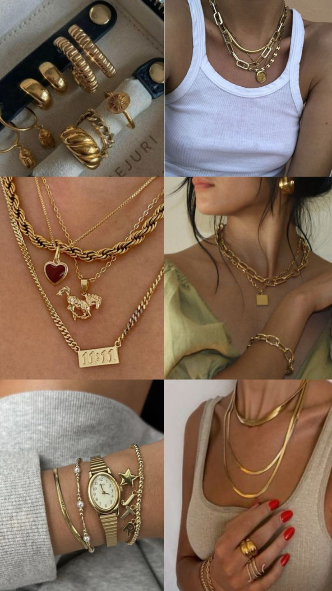

Sobre a CAVINA
"Acreditamos que uma joia deve ir além da beleza estética: ela deve refletir emoções, guardar memórias e acompanhar você nos momentos mais marcantes da vida. Por isso, na Cavina Joias, unimos tradição, design refinado e qualidade excepcional para oferecer peças que traduzem a sua essência e iluminam cada ocasião.
Cada peça é pensada para transformar momentos especiais em memórias inesquecíveis.